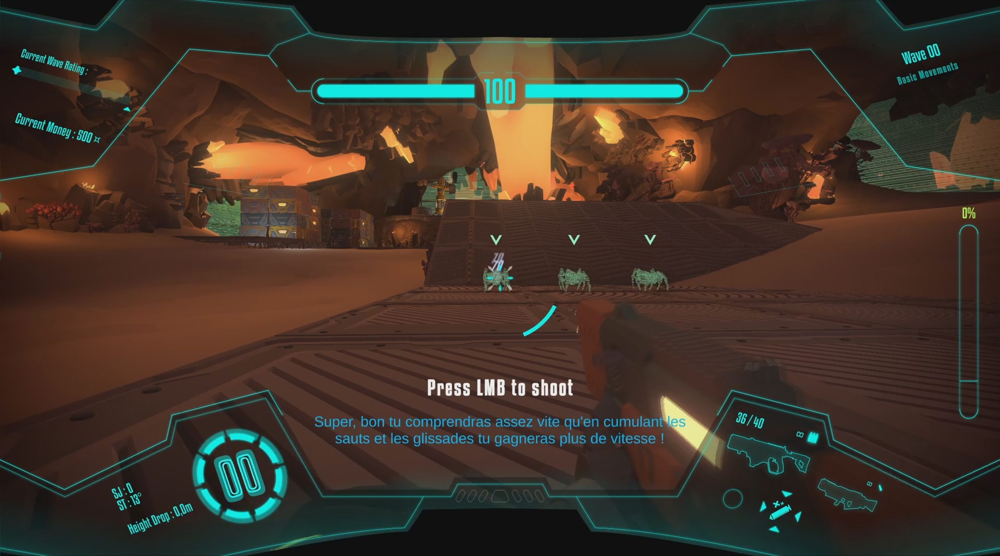

Action-Shooter · Roguelite
Caverners
Jeu de tir à la première personne ultra dynamique, avec des mécaniques de déplacement permettant d'accumuler de la vitesse. Passez les vagues d'ennemis et protégez les sites d'extractions de minerai dans ce genre reprenant la structure Roguelike. Prototype jouable disponible.
- Character Controller
- Ajout de mission avec le système établi
- Effets visuels et sonores + intégration
- Outil pour les sous-titres
- Aide à la visée